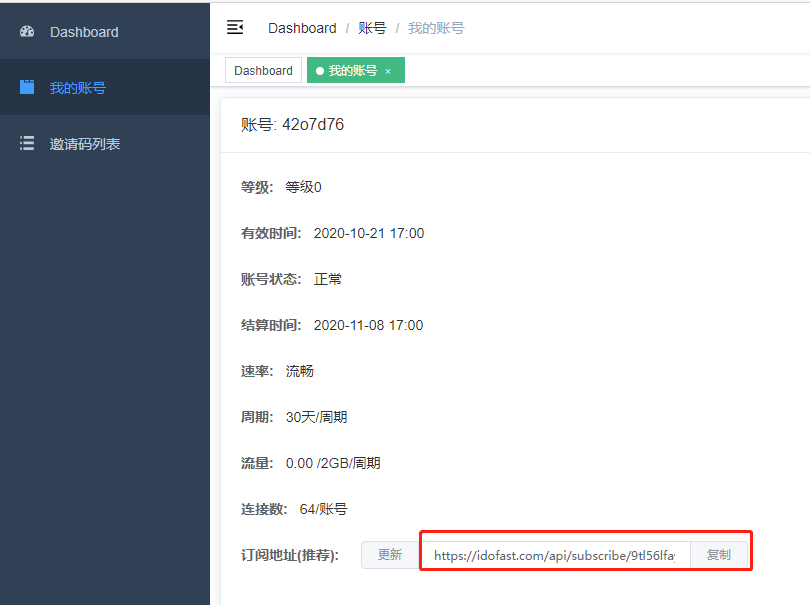
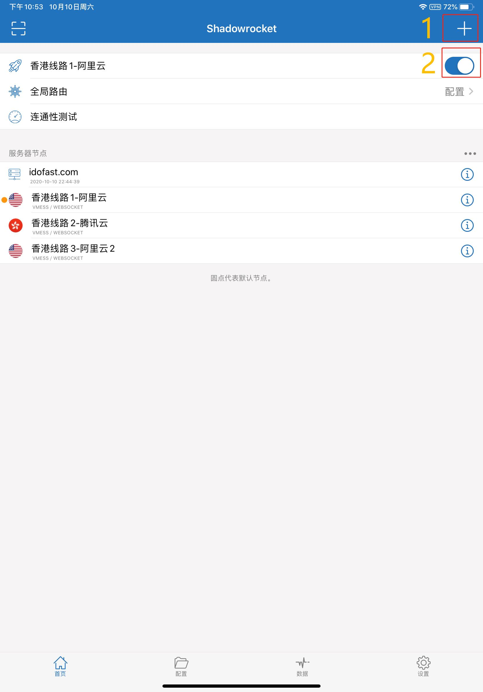
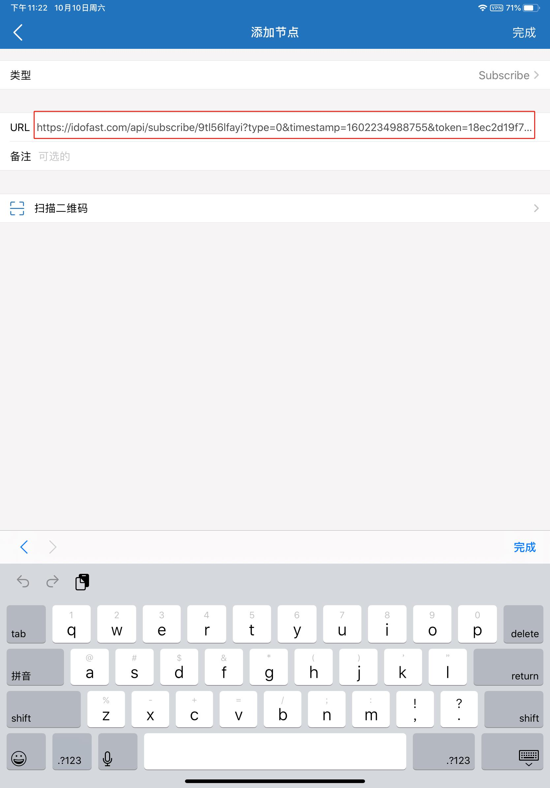

IOS使用教程
第一步，安装shadowrocket
ios需要安装一个shadowrocket的软件，由于你懂的原因，这款软件在国内的app store里是搜不到的。但是这款软件在美国是可以下载的，所以我们需要一个美区的apple账号登陆，然后下载这款软件
视频教程如下
图片教程如下
美区appleid账号请找管理员咨询
xhjdashi@163.com
Ydashi11
登陆之后下载shadowrocket然后安装
第二步，导入服务器节点
视频教程如下
图片教程
登陆自己的账号后台，在我的账号这一栏中有个订阅地址，点击复制(我们把所有的服务器信息都发布在这个网址里了)
打开shadowrocket，点击1处的加号图标
会出现这样的页面，把刚才复制的订阅链接填入，点击右上角完成便可OK。它会自动下载服务器信息并导入到本地
回到主页面，服务器节点那里会多出几个选项，随便选择一个，再点击2处的按钮开启shadowrocket。
此时已经安装完毕，可以拿谷歌测试一下是否可以正常访问国外网站www.google.com